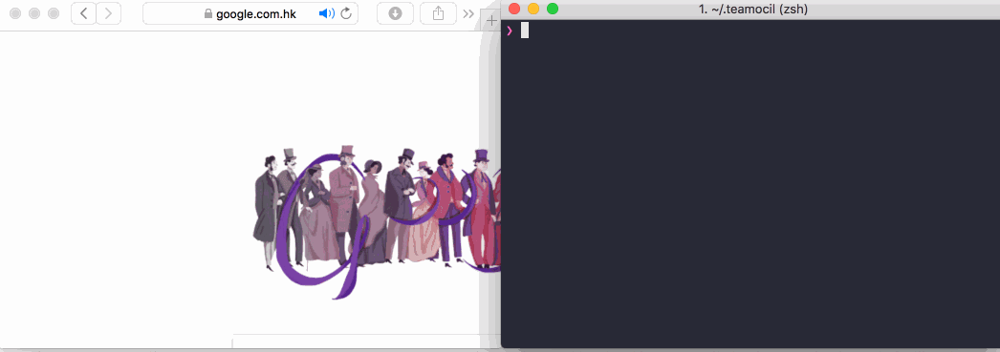
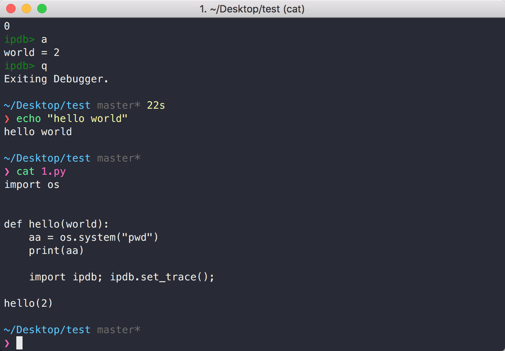
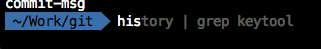
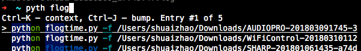
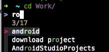

高效使用iTerm
iTerm
iTerm是Mac上最好用的终端app，即下即用：http://www.iterm2.com/。
对于它有哪些好用的功能，可以参看这里：https://www.iterm2.com/documentation-highlights.html
iTerm提供了很好的对于字体、颜色的自定义接口以及窗体等的边界访问，下面将会用到。
itermocil
这是一个iTerm的插件，因此不放到下面的插件部分了：https://github.com/TomAnthony/itermocil 。
它能干什么呢？看一下：

简单来说，就是一个iTerm的窗口管理器。实现上面的例子的代码大概是这样的：
windows: - name: flask-layout root: ~/work/git/ios_flask/app layout: even-vertical panes: - commands: - python3 hello.py - commands: - cd frontend - npm run start
这在需要同时打开多个窗体的时候特别有用。具体配置还是看github上的文档。
zsh & oh-my-zsh
zshell（1990）实际上跟bash（1989）差不多老。bash的好处是Linux的默认shell，稳定普遍。zshell具有更好的扩展性，更好的交互特性。而且更重要的是，oh-my-zsh的存在使得zsh变得无比强大。
首先看一下我们系统里支持那些shell：
cat /etc/shells
当前的shell：
echo $SHELL
使用zsh作为默认shell：
chsh -s /bin/zsh
oh-my-zsh
Oh My Zsh，POWER OVERWHELMING!
sh -c "$(curl -fsSL https://raw.github.com/robbyrussell/oh-my-zsh/master/tools/install.sh)"
默认操作
有一些默认的操作需要记一下（s-super, c-ctrl, m-alt），具体名词就不解释了，试一下就知道什么意思：
| key | 功能 |
| s-d/s-D | Split pane horizontally/vertically |
| s-]/s-[ | Next/Previous pane |
| s-t | New tab |
| s-}/s-{ | Next/Previous tab |
| s-[number] | Switch to tab [number] |
| s-n | New window |
| s-w | Close current pane/tab/window |
然后是一些窗体内的操作：
| key | 功能 |
| s-=/s-- | Bigger/smaller font size |
| s-k | 清空窗口内容 |
| c-c | 终止 |
| c-n/c-p | 上一条/下一条命令 |
| c-r | Incrementally search command |
| c-a/c-e | 行首、行尾 |
| c-w | 删除最后一个单词 |
一些常被忽略的用法
- …
标准的返回上一层的指令为cd ..。而现在可以…..来返回上一层，两个点上一层，三个点上两层，以此类推。 - take
即mkdir & cd，例如take a == mkdir a && cd a 。 - 鼠标选中
鼠标选中则自动复制，不用再按s-c。 - 唤起
可以设置快捷键在任何地方唤起iTerm。
Preferences -> keys -> Show/hide all windows with a system-wide hotkey设置一个快捷键，例如"ctrl-super-,"。 - 时间戳
iterm的又一好用功能。View -> Show Timestamps，这时在屏幕右侧会出现每个命令的时间戳。 - 恢复窗口
一不小心把session关了，s-z重新打开。
配置
好的，现在材料已经备齐，开始配置。
zshell的配置文件在用户目录下，即~/.zshrc，用你喜欢的编辑器打开它。每次新建一个新的session时都会载入这个文件。
快捷键
绑定快捷键很简单，如下：
bindkey '^B' backward-word bindkey '^F' forward-word
这两条就表示ctrl-b是向前退一个单词，ctrl-f是前进一个单词。不知道为什么这两个键不是默认的，手动设一下。
一些小的代码段
切换到Finder同目录：
df() { curFinderDir=`osascript -e 'tell app "Finder" to POSIX path of (insertion location as alias)'` echo "\033[31m$curFinderDir\033[0m" cd $curFinderDir }
切换到Xcode同目录：
dx() { curXcodeProjectDir=`osascript -e 'tell application id "com.apple.dt.Xcode" to return path of document 1'` echo "\033[31m$curXcodeProjectDir\033[0m" cd $curXcodeProjectDir/.. }
切换到Android Studio同目录：
# cd android da() { title=`osascript -e 'tell application "System Events" to get the {title} of window 1 of process "Android Studio"'` title=$(echo ${${title#*- \[}%\]*} | sed "s|^~|$HOME|g") echo "\033[31m$title\033[0m" cd $title/ }
theme
一个养眼的theme是必须的，例如这样子(sanzzy + Meslo 13 font + pure)：

在我们的这个环境里，一个theme是由三部非组成的，分别是iTerm的colorthemes(.itermcolors)用来决定各种前景、背景色；字体；以及oh-my-zsh的决定各种行摆放位置的theme。
- iTerm的colorthemes可以在这里找到：https://github.com/mbadolato/iTerm2-Color-Schemes
- 字体在preferences -> Profiles -> Text -> Change Font 自己微调就好了。
oh-my-zsh的默认主题在其文件夹下的theme目录；在线预览：
https://github.com/robbyrussell/oh-my-zsh/wiki/Themes
第三方theme列表：
https://github.com/unixorn/awesome-zsh-plugins#themes
有的主题需要安装theme，例如powerline相关的theme都需要安装这些font: https://github.com/powerline/fonts ，然后在iTerm2的Preferences -> Profiles -> Text中同时将Font设置为Meslo LG M DZ Regular for Powerline即可。
插件
oh-my-zsh的强大之处就在于其插件系统，自带的插件在其plugins目录下；可以在这里看到文档：https://github.com/robbyrussell/oh-my-zsh/wiki/Plugins 。
除自带的插件外，还有很多geeks的第三方插件，这里有一个集合：https://github.com/unixorn/awesome-zsh-plugins 。
包管理
一个包管理器是必须的。
https://github.com/zsh-users/antigen
安装：
brew install antigen
然后可以新建一个.zsh_antigen，把下面的代码放进去：
source /usr/local/share/antigen/antigen.zsh # Load the oh-my-zsh's library. antigen use oh-my-zsh # Bundles from the default repo (robbyrussell's oh-my-zsh). antigen bundle git antigen bundle z antigen bundle python antigen bundle pip antigen bundle vi-mode antigen bundle command-not-found antigen bundle zsh-users/zsh-autosuggestions antigen bundle zsh-users/zsh-completions antigen bundle zdharma/fast-syntax-highlighting antigen bundle changyuheng/zsh-interactive-cd antigen bundle laurenkt/zsh-vimto antigen bundle psprint/history-search-multi-word # Load the theme. antigen bundle mafredri/zsh-async antigen bundle sindresorhus/pure # Tell Antigen that you're done. antigen apply
然后在.zshrc中添加一行
source .zsh_antigen
假如需要安装另一个默认插件，例如z：
antigen bundle z
如果要安装一个第三方插件（以及第三方theme），首先在github上找到它，例如https://github.com/laurenkt/zsh-vimto ，一般来说直接用左上角的库名，也就是laurenkt/zsh-vimto就可以了，但具体还是要看文档：
antigen bundle laurenkt/zsh-vimto
然后就可以把这个文件放到版本库或者云端保存了，以后到新的机器上就很省事了。
下面介绍一些好用的插件：
z
安装：
antigen bundle z
使用：
访问过的路径会根据使用频繁程度排序，例如经常进入ios和ios2路径，其中ios2比ios更频繁，那么：
z i
将会切换到ios2下。
vi-mode
安装：
antigen bundle vi-mode
使用：
命令行内操作可以用vi指法。例如输入了这么一行指令：
find . -name "*.el" | xargs cat | grep -v ^$ | wc -l
现在我想把el修改为py。如果没有vi-mode就麻烦了，需要各种ctrl-b然后再修改。用vi-mode之后，操作是这样的：
- Esc 此时窗口最右侧会出现 <<<（如果安装了zsh-vimto，则显示一个NORMAL）
- F. 此时光标移动到了.el的.上
- lxxipy 修改完成
- Enter
zsh-autosuggestions

- 安装：
antigen bundle zsh-users/zsh-autosuggestions
- 使用：
将会根据输入显示最后输入的命令，c-e补全。
fast-syntax-highlighting
- 安装：
antigen bundle zdharma/fast-syntax-highlighting
更好的高亮支持。
history-search-multi-word

- 安装：
antigen bundle psprint/history-search-multi-word
- 使用：
更好的c-r支持。有列表提示，且可以用空格进行关键词的增加。c-r/c-n 下一条；c-p上一条。
zsh-interactive-cd

- 安装：
先brew install fzf
antigen bundle changyuheng/zsh-interactive-cd
- 使用：
交互式的cd。
zsh-vimto
- 安装：
antigen bundle laurenkt/zsh-vimto
- 使用：
更好的vi指法支持。
最后
其他alias之类的烂大街的东西就不写了，之后应该不会再这么集中的折腾终端了。
以上。